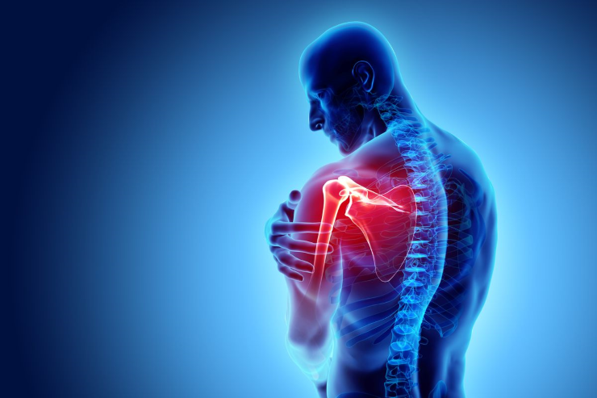

Top 10 Tips for Maintaining Joints and Bones
Harmony Health Care Center: Nurturing Strong Joints and Bones for a Healthy Life
Maintaining healthy joints and bones is crucial for overall well-being and mobility. Our joints and bones play a vital role in supporting our bodies and enabling us to engage in various activities. However, as we age or engage in physically demanding activities, the risk of joint and bone disorders increases. The good news is that there are effective techniques and practices to enhance joint and bone health.
Common Bone and Joint-Related Diseases and Their Causes
- Osteoporosis: This prevalent condition results from cartilage breakdown in the joints, leading to pain, stiffness, and inflammation. Fractures associated with osteoporosis typically occur in the hip, spine, and wrist.
- Fracture: A bone fracture can occur due to sudden or intense pressure or force, often resulting from falls, direct impact, or sports-related injuries.
- Scoliosis: Scoliosis involves an abnormal curvature of the spine, resulting in an S or C shape. It typically occurs during a child's growth spurt before puberty.
- Paget's Disease: This long-term condition affects how bones break down and regenerate, resulting in larger and softer bones than usual.
- Gout: Gout is an inflammatory arthritis characterized by severe pain and caused by an excess of uric acid in the body, leading to the formation of uric acid crystals in joints, most commonly in the big toe.
10 Tips for Maintaining Healthy Joints and Bones
- Follow a Regular Exercise Routine: Exercise is one of the most effective ways to keep your bones, muscles, and joints in good condition. Incorporate weight-bearing and strength training exercises to strengthen bones and combat age-related bone loss. Low-impact exercises like swimming and cycling can enhance joint flexibility without excessive strain.
- Maintain a Healthy Weight: Excess weight puts added stress on your joints, particularly those in the lower body. Even a modest weight loss can alleviate joint discomfort and promote healthier bones. Combine regular physical activity with a balanced diet for weight management.
- Practice Proper Posture: Maintaining good alignment and posture distributes weight and stress evenly across your skeletal system, reducing strain on specific joints and bones. Good posture also ensures that joints move smoothly and efficiently, reducing the risk of joint and bone-related issues.
- Eat a Balanced Diet: Choose foods that support bone density, strengthen connective tissues, and reduce inflammation. Foods like fish, red meat, green vegetables, nuts, beans, and lentils provide essential calcium for bone health.
- Ensure Adequate Vitamin D Intake: Vitamin D is crucial for calcium absorption in the body. Sources of vitamin D include oily fish, eggs, fortified foods, and exposure to morning sunlight.
- Quit Smoking: Smoking negatively impacts bone density, increases fracture risk, and hinders bone repair. Quitting smoking is essential for improving bone health and reducing the likelihood of joint disorders.
- Limit Alcohol Intake: Excessive alcohol consumption can interfere with calcium and vitamin D absorption, harm bone-forming cells, and contribute to inflammation, which may exacerbate joint pain. Moderate alcohol consumption is advisable for optimal bone and joint health.
In conclusion, prioritizing the health of your joints and bones is essential for maintaining an active and vibrant life. By incorporating these ten tips into your daily routine, you can significantly reduce the risk of bone and joint disorders. These practices not only boost bone density and joint function but also contribute to overall well-being.
At Durdans, one of the leading private hospitals in Sri Lanka, our panel of orthopedic doctors is dedicated to providing top-notch orthopedic diagnosis and services. To schedule an Orthopedics Consultation, simply dial +94 75 636 8473 or book your appointment through our chatbot by texting 'Hi' to [WhatsApp link].